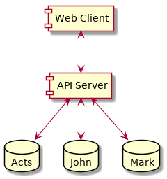
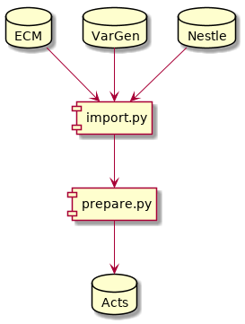
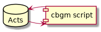

Introduction¶
A program suite for doing CBGM.
The CBGM is a method for inferring global manuscript stemmata from local stemmata in the manuscripts’ texts.
![strict digraph G {
graph [bb="0,0,220,175",
fontname="LiberationSans-Regular",
fontsize=10.5,
nodesep=0.2,
ordering=out,
rankdir=TB,
ranksep=0.4,
remincross=true,
size=11.85
];
node [height=0.3,
label="\N",
margin=0.005,
shape=ellipse,
width=0.3
];
edge [arrowhead=normal,
arrowtail=none,
labelangle=-15.0,
labeldistance=2.0
];
"*" [clique=0,
droptarget=1,
height=0.30556,
label="*",
labez="*",
labez_clique="*",
pos="47,164",
width=0.30556];
a [clique=1,
draggable=1,
droptarget=1,
height=0.30556,
label=a,
labez=a,
labez_clique=a,
pos="47,113",
width=0.30556];
"*" -> a [pos="e,47,124.04 47,152.61 47,147.21 47,140.42 47,134.05"];
"?" [clique=0,
droptarget=1,
height=0.30556,
label="?",
labez="?",
labez_clique="?",
pos="173,164",
width=0.30556];
a2 [clique=2,
draggable=1,
droptarget=1,
height=0.30556,
label=a2,
labez=a,
labez_clique=a2,
pos="137,113",
width=0.30556];
"?" -> a2 [pos="e,143.2,122.44 166.73,154.46 161.93,147.93 155.16,138.71 149.29,130.72"];
c3 [clique=3,
draggable=1,
droptarget=1,
height=0.30556,
label=c3,
labez=c,
labez_clique=c3,
pos="173,113",
width=0.30556];
"?" -> c3 [pos="e,173,124.04 173,152.61 173,147.21 173,140.42 173,134.05"];
d3 [clique=3,
draggable=1,
droptarget=1,
height=0.30556,
label=d3,
labez=d,
labez_clique=d3,
pos="209,113",
width=0.30556];
"?" -> d3 [pos="e,202.8,122.44 179.27,154.46 184.07,147.93 190.84,138.71 196.71,130.72"];
b [clique=1,
draggable=1,
droptarget=1,
height=0.30556,
label=b,
labez=b,
labez_clique=b,
pos="11,62",
width=0.30556];
a -> b [pos="e,17.199,71.437 40.729,103.46 35.928,96.93 29.156,87.712 23.287,79.725"];
c [clique=1,
draggable=1,
droptarget=1,
height=0.30556,
label=c,
labez=c,
labez_clique=c,
pos="47,62",
width=0.30556];
a -> c [pos="e,47,73.042 47,101.61 47,96.209 47,89.424 47,83.053"];
d [clique=1,
draggable=1,
droptarget=1,
height=0.30556,
label=d,
labez=d,
labez_clique=d,
pos="83,62",
width=0.30556];
a -> d [pos="e,76.801,71.437 53.271,103.46 58.072,96.93 64.844,87.712 70.713,79.725"];
c2 [clique=2,
draggable=1,
droptarget=1,
height=0.30556,
label=c2,
labez=c,
labez_clique=c2,
pos="119,62",
width=0.30556];
a2 -> c2 [pos="e,122.58,72.754 133.53,102.55 131.42,96.797 128.64,89.233 126.08,82.263"];
d2 [clique=2,
draggable=1,
droptarget=1,
height=0.30556,
label=d2,
labez=d,
labez_clique=d2,
pos="155,62",
width=0.30556];
a2 -> d2 [pos="e,151.42,72.754 140.47,102.55 142.58,96.797 145.36,89.233 147.92,82.263"];
e [clique=1,
draggable=1,
droptarget=1,
height=0.30556,
label=e,
labez=e,
labez_clique=e,
pos="47,11",
width=0.30556];
c -> e [pos="e,47,22.042 47,50.608 47,45.209 47,38.424 47,32.053"];
f [clique=1,
draggable=1,
droptarget=1,
height=0.30556,
label=f,
labez=f,
labez_clique=f,
pos="83,11",
width=0.30556];
d -> f [pos="e,83,22.042 83,50.608 83,45.209 83,38.424 83,32.053"];
}](_images/graphviz-302a8c1aaf18d8c5ca12b731efdc328331cd6bc3.png)
An example of a local stemma¶
In the CBGM we assume that a manuscript is prior to another manuscript if it contains a greater percentage of prior readings than posterior readings. Then we build a global stemma of manuscripts by using the most similar prior manuscripts as the parent manuscript.
The program suite consists of:
- a web application, and
- a set of scripts to manipulate the CBGM database.
Web Application¶
The web application consists of a web client and an API
server. The client runs in the user’s browser. The API server runs on
a dedicated web server. It can manage multiple databases.

Web Application¶
Preparing the Database for the CBGM¶
Currently we host the CBGM for three books, namely Acts, John and Mark, by different editorial teams and in different stages of completion. Each book gets its own database.
As raw input we use the database that contains the apparatus of the Editio Critica Maior publication. Supplemental data comes from a database of editorial decisions (VarGen) regarding the priority of the readings. The Nestle database contains the “Leitzeile”.
The scripts/cceh/import.py script imports the mysql databases into the postgres database and the scripts/cceh/prepare.py script transforms the structure of the database into one suitable for doing the CBGM.
This process needs to be done only once.

Database Preparation for CBGM¶
The databases for John and Mark are imported in a similar way. Each team has a different workflow, and uses a different structure in their input databases. The import script tries to accomodate all those differences.
Applying the CBGM¶
The scripts/cceh/cbgm.py script recalculates the CBGM. Whenever a local stemma changes, the CBGM coefficients have to be recalculated. This process is started once every night because it takes a few minutes to complete.

Applying the CBGM¶
Updating the Apparatus¶
If the apparatus needs an update the whole database must be rebuilt from scratch, and the editorial decisions have to be saved from the old database and reloaded into the new database.
- the scripts/cceh/save_edits.py script is used to save the editorial decisions,
- the scripts/cceh/import.py and scripts/cceh/prepare.py scripts are used to import and prepare a new apparatus, and
- the scripts/cceh/load_edits.py script is used to restore the editorial decisions into the new database, and finally
- the scripts/cceh/cbgm.py script is run to apply the CBGM to the new data.
Links¶
The application is online at: http://ntg.cceh.uni-koeln.de/acts/ph4/
The source code is online at: https://github.com/cceh/ntg
Author: Marcello Perathoner <marcello.perathoner@uni-koeln.de>